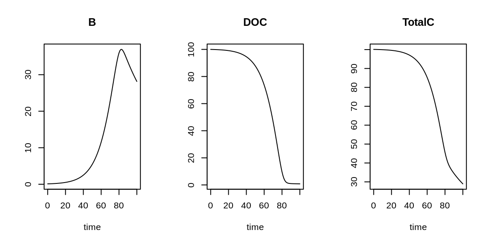

Tutorial
You are advised to watch the following video first.
Video timeline
- 0:00 Worker vs. Resource (limitation, inhibition)
- 2:21 Logistic growth model
- 4:49 Lotka-Volterra model
You can also read the following section(s) of the textbook:
- Chapter 2.5. Basic Formulation of Ecological Interactions
- Chapter 2.6. Coupled Model Equations
- Chapter 2.7. Model Simplifications
(You can download each chapter of the textbook via the e-book University library for free!)
Ecological interactions: algal N-uptake
Ecological interactions: predation
Simple differential equations - I
Simple differential equations - II
Simple differential equations - III
Interactive differential equations
Logistic model
A population is growing according to the logistic model characterised by the carrying capacity of \(K=10^6~ind~km^{-2}\).
Logistic curve
Select the initial population size, \(M_{ini}\), and study how the population changes initially and on long time-scales. (Calculated using \(r=1~yr^{-1}\) and \(K=1\times 10^6\).)
Recognizing rate expressions
Biochemistry: Bacterial uptake of DOC
The scheme below describes bacterial dynamics in a well-stirred closed system. It describes the exchange of carbon between bacterial biomass (B) and dissolved organic carbon (DOC). Both state variables are in units of \(mol~C~m^{-3}\).

You are given a table with parameter values:
| parameter | value | description | unit |
|---|---|---|---|
| \(g\) | 0.2 | uptake rate constant | \(hr^{-1}\) |
| \(k_s\) | 10 | half-saturation concentration | \(mol~C~m^{-3}\) |
| \(\gamma\) | 0.5 | bacterial growth efficiency | - |
| \(r\) | 0.01 | basal respiration parameter | \(hr^{-1}\) |
| \(m\) | 0.0005 | mortality rate constant | \((mol~C~m^{-3})^{-1} hr^{-1}\) |
The initial conditions are: \[ B_{ini} = 0.1~mol~C~m^{-3} \qquad DOC_{ini}=100~mol~C~m^{-3}\]
Implementation in R
By now you should be able to write the mass balance equations and rate expressions for the model describing bacterial uptake of DOC. We do not give them in a mathematical formalism but implement them directly in R.
require(deSolve)
# Bacterial uptake of DOC
# -----------------------
# [/hr], [molC/m3], [-] , [/hr] , [/(molC/m3)/hr]
parms <- c(g=0.2, ks=10, gamma=0.5, r=0.01, m=0.0005) # model parameters
y.ini <- c(B=0.1, DOC=100) # [molC/m3] initial conditions
Bactmod <- function(t, y, p){ # model function, calculates time-derivatives
with (as.list(c(y,p)),{
# rate expressions
BactUptake <- g * DOC/(DOC+ks) * B
BactGrowth <- gamma * BactUptake
BactDeath <- m * B^2
BasalResp <- r * B
ActivityResp <- (1-gamma) * BactUptake
# mass balance equations
dB.dt <- BactUptake - ActivityResp - BasalResp - BactDeath
dDOC.dt <- -BactUptake + BactDeath
# return derivative vector and output variable
list(c(dB.dt, dDOC.dt),
TotalC=B+DOC)
})
}
times <- seq(from=0, to=100, by=1)
out <- ode(y=y.ini, times=times, func=Bactmod, parms=parms)
plot(out, mfrow=c(1,3))
TASK
You get as input the above R-code implementing the model of bacterial uptake of DOC. Your task is to add dissolved inorganic carbon (DIC) to the model. Assume the initial concentration of DIC to be 0. Hint: Realize that DIC is produced by the bacterial respiration.
require(deSolve)
# Bacterial uptake of DOC
# -----------------------
# [/hr], [molC/m3], [-] , [/hr] , [/(molC/m3)/hr]
parms <- c(g=0.2, ks=10, gamma=0.5, r=0.01, m=0.0005) # model parameters
y.ini <- c(B=0.1, DOC=100) # [molC/m3] initial conditions
Bactmod <- function(t, y, p){ # model function, calculates time-derivatives
with (as.list(c(y,p)),{
# rate expressions
BactUptake <- g * DOC/(DOC+ks) * B
BactGrowth <- gamma * BactUptake
BactDeath <- m * B^2
BasalResp <- r * B
ActivityResp <- (1-gamma) * BactUptake
# mass balance equations
dB.dt <- BactUptake - ActivityResp - BasalResp - BactDeath
dDOC.dt <- -BactUptake + BactDeath
# return derivative vector and output variable
list(c(dB.dt, dDOC.dt),
TotalC=B+DOC)
})
}
times <- seq(from=0, to=100, by=1)
out <- ode(y=y.ini, times=times, func=Bactmod, parms=parms)
plot(out, mfrow=c(1,4))require(deSolve)
# Bacterial uptake of DOC
# -----------------------
# [/hr], [molC/m3], [-] , [/hr] , [/(molC/m3)/hr]
parms <- c(g=0.2, ks=10, gamma=0.5, r=0.01, m=0.0005) # model parameters
y.ini <- c(B=0.1, DOC=100) # [molC/m3] initial conditions
Bactmod <- function(t, y, p){ # model function, calculates time-derivatives
with (as.list(c(y,p)),{
# rate expressions
BactUptake <- g * DOC/(DOC+ks) * B
BactGrowth <- gamma * BactUptake
BactDeath <- m * B^2
BasalResp <- r * B
ActivityResp <- (1-gamma) * BactUptake
# mass balance equations
dB.dt <- BactUptake - ActivityResp - BasalResp - BactDeath
dDOC.dt <- -BactUptake + BactDeath
# return derivative vector and output variable
list(c(dB.dt, dDOC.dt),
TotalC=B+DOC)
})
}
times <- seq(from=0, to=100, by=1)
out <- ode(y=y.ini, times=times, func=Bactmod, parms=parms)
plot(out, mfrow=c(1,4))Tips:
You will need to add a new state variable called DIC in y.ini.
In the model function you must specify the mass balance for DIC (call it dDIC.dt), and include it in the time-derivative vector.
You also need to include DIC in the total carbon concentration. Because the model now “captures” all C pools, the total C concentration should remain constant during the simulation.
More exercises
To learn more about modelling of ecological interactions, solve additional exercises available in the R-package RTM. To display these exercises, type one of the following commands in the R-console:
require(RTM)
RTMexercise("detritus")
RTMexercise("COVID")
RTMexercise("npzd")
RTMexercise("crops_weeds")Finally
References
R Core Team (2020). R: A language and environment for statistical computing. R Foundation for Statistical Computing, Vienna, Austria. URL https://www.R-project.org/.
Karline Soetaert, Thomas Petzoldt, R. Woodrow Setzer (2010). Solving Differential Equations in R: Package deSolve. Journal of Statistical Software, 33(9), 1–25. DOI: 10.18637/jss.v033.i09. http://www.jstatsoft.org/v33/i09/
Karline Soetaert, Peter M.J. Herman (2009). A Practical Guide to Ecological Modelling. Springer Netherlands. DOI: 10.1007/978-1-4020-8624-3.